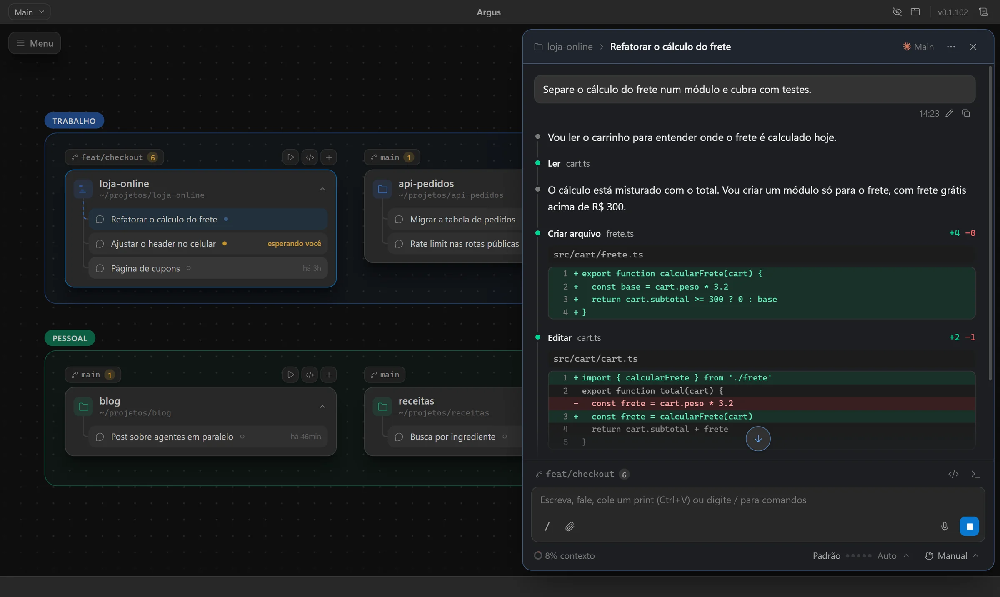

?Tutorial · Agents
Create agents and manage project memory
A library of agents you call with @name, plus the CLAUDE.md editor.
Help › Agents

1Open the library
Choose Agents in the menu (Ctrl Shift A (⇧⌘A on Mac)). These are Claude Code subagents, stored in
~/.claude/agents.2Create an agent
Creating one is a guided, step-by-step flow: describe what the agent does and Claude fills in the fields. Then fine-tune the instructions.
3Call it in a conversation
Type
@namein any conversation. While the agent works, it shows up below the conversation along with what it's doing right now.4Edit the memory
Open Claude memory (Ctrl Shift M (⇧⌘M on Mac)) to edit the global
CLAUDE.md, each project's own, and the notes kept by auto memory.